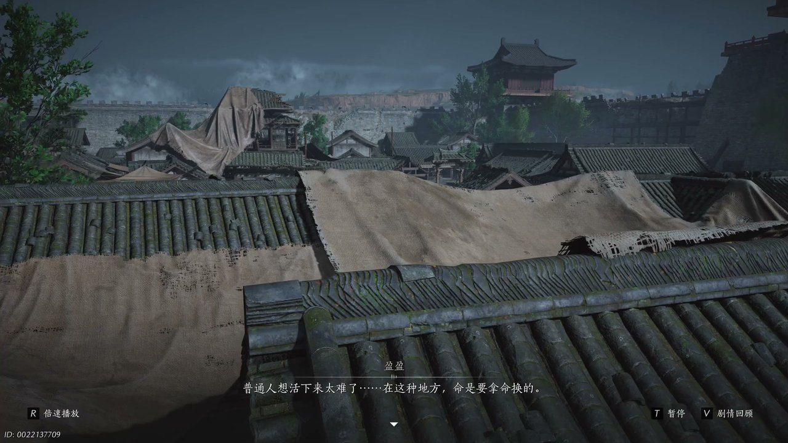
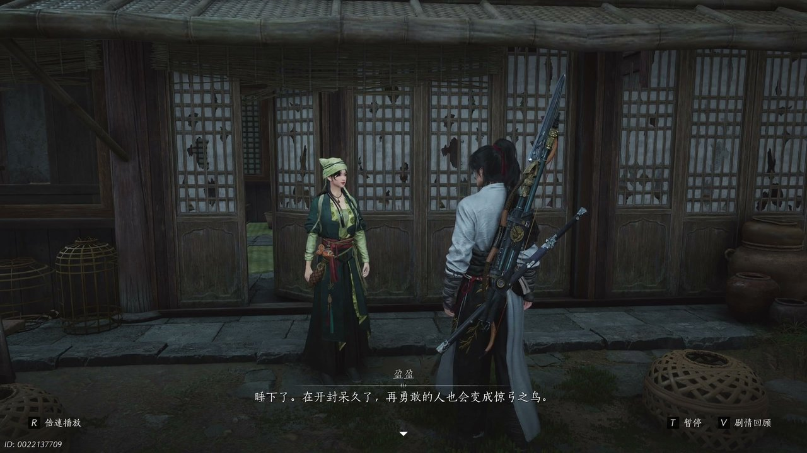
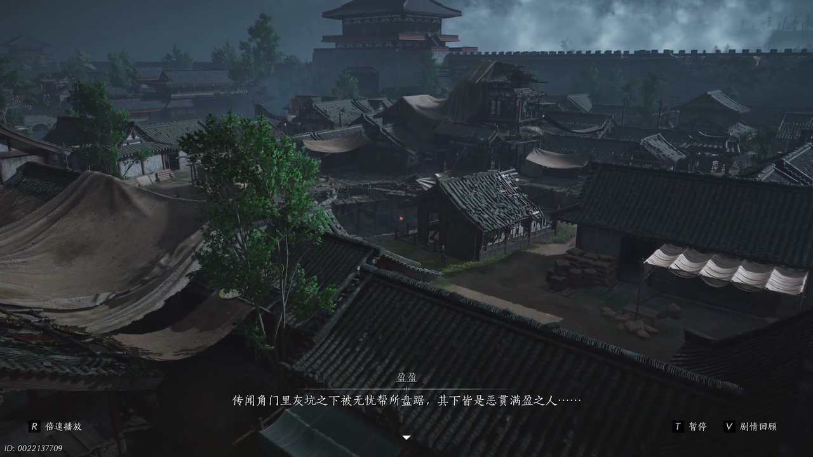
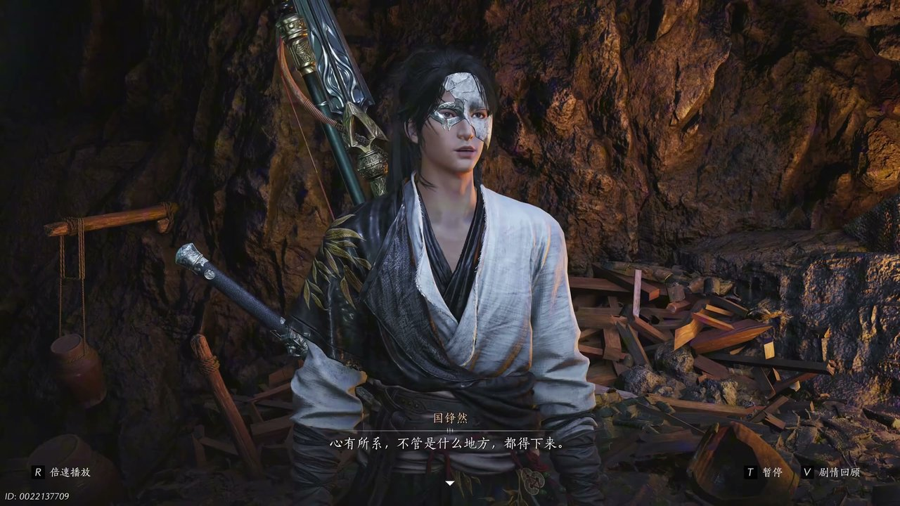
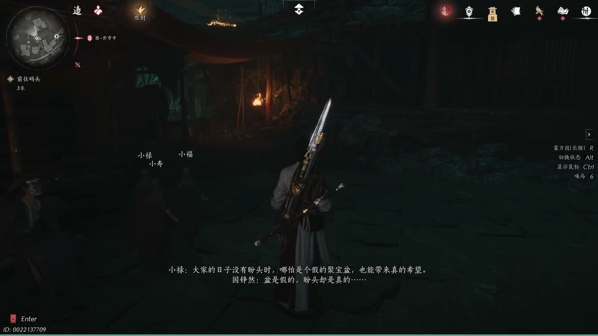
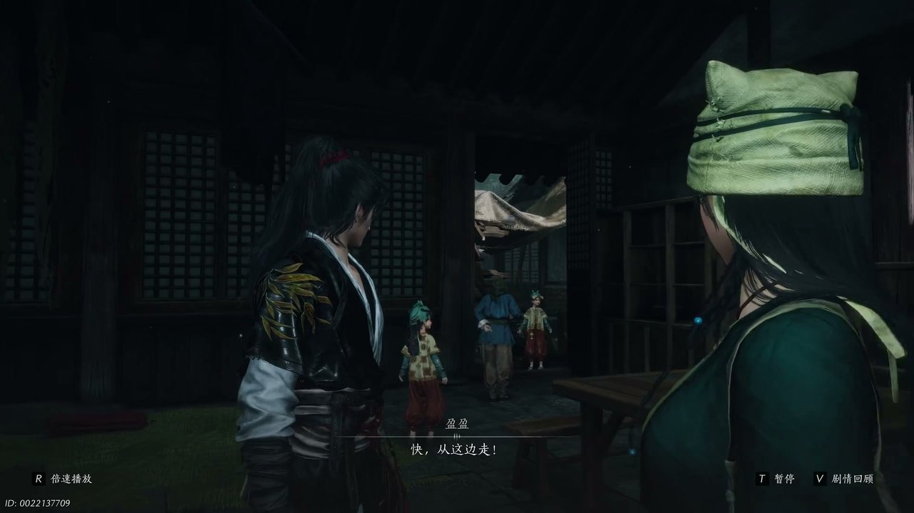

燕云背后的故事：第7集 盈盈
燕云背后的故事：第7集 盈盈

朋友们，上一集咱们说到——官兵清缴唐钱、草盆售卖败露、周寡妇满心怨怼，三件事叠加之下，市井局势瞬间变得紧张不堪。新来的朋友可能纳闷，好不容易收拢的唐钱线索，为何转眼就被官府全盘压制？简单说，少东家借着草盆计策摸清唐钱流向，可官兵奉旨封锁街巷，截断了所有追查路径。可他哪知道，看似寻常的市井纷争背后，盈盈藏着不为人知的过往身世。这不，街巷冲突平息之后，盈盈与周寡妇争执不休，众人聚在归奶奶小院之中，一场关于身世的对话缓缓拉开序幕。

狭小的院落里气氛压抑，周寡妇满心烦躁，对着盈盈不停抱怨，语气满是疲惫与不甘：“铜钱铜钱挣不来，钱塘钱留不住，你瞧俺是穷鬼，便一心讨好外边的人。”盈盈连忙出言安抚，让周寡妇先回去冷静，自己会想办法解决眼下的困境。赵大哥见状连忙从中调和，劝周寡妇不要把气话放在心上。盈盈望着心绪难平的周寡妇，缓缓说起她过往的模样，当初周寡妇性情温柔，说话从未高声，是开封连年动荡、战火不断，才让她变得尖锐刻薄。院墙之外风声呜咽，巷子里偶尔传来百姓的叹息声，盈盈轻声感慨，普通人在乱世之中想要活下去实在太难，命是要拿命换的。赵大哥安慰盈盈，等到战事结束日子自然会变好，盈盈却满心忧虑，害怕底层百姓根本等不到太平到来的那一天，她分不清各方势力的对错，只知晓无论哪一方，都未曾真正顾及寻常人的生死。

众人闲谈之间，归奶奶突然神志错乱，紧紧抓着盈盈的衣袖，口中不断念叨着早已逝去的亲生女儿，眼神恍惚，分不清眼前之人到底是谁。盈盈耐心安抚老人，搀扶着她回到屋内歇息，等归奶奶睡熟之后，才重新走出房间。院落里只剩少东家与盈盈二人，暮色笼罩着青砖地面，空气中弥漫着淡淡的尘土气息。少东家察觉到不对劲，开口询问归奶奶为何会突然失常，还提及十一年前契丹入城的旧事，质疑盈盈的年纪与说辞对不上，点破归奶奶口中那位眼睛细长的姑娘才是真正的盈盈。盈盈愣在原地，没有继续掩饰，坦言少东家太过聪慧，随后打算将自己的故事娓娓道来。她坦言自己本是高门大族的小姐，家族富庶无人能及，可豪门之中的荣华富贵，到头来反倒会吞噬人心，先是磨灭良心，再是斩断情义，最后让人变得如同禽兽一般。

盈盈诉说着自己被家族抛弃的经历，自己被豪门抛弃之后险些冻饿而死，多亏归奶奶出手相救，给了她重新活下去的机会，如今她一心想要夺回属于自己的一切。屋外忽然传来嘈杂的呼喊声，百姓哀嚎不断，官兵四处搜查收缴唐钱，许多依靠唐钱勉强糊口的百姓瞬间失去生计。盈盈神色凝重，告诉少东家大批百姓陷入绝境，一旦失去收入，就会被丢入开封城郊的灰坑之中。少东家听闻灰坑之名，立刻想起之前打探到的鬼市线索，盈盈接着告知，灰坑区域被无忧帮盘踞，手下之人皆是作恶多端之徒，如今开封城的秩序已经彻底混乱。混乱之中归奶奶再次走失，盈盈心急如焚，少东家决定帮忙寻找老人，二人分头行动，少东家独自踏入街巷深处，四处向路人打听归奶奶的踪迹。街巷之中一片狼藉，百姓惶恐不安，纷纷诉说着家中孩童无故失踪，害怕家人被无忧帮掳走，哀嚎声在狭窄的巷子之中不断回荡。

少东家一路深入灰坑地界，这片半阴半阳的区域阴暗潮湿，四周悬挂着破旧的幡旗，空气里夹杂着腐朽的味道。守在此地的敲钟人拦住去路，开口质问他放着阳间大路不走，为何贸然踏入这片险境。少东家神色坚定，恭敬地向老者行礼，表明自己是为了寻找走失的朋友，一位戴着老鼠帽的小姑娘。敲钟人打量着眼前的少年，感慨他胆子极大，明知此地凶险依旧执意前来，最终于心不忍，指点他向左行进便能找到想要寻找的人。少东家道谢之后继续前行，没多久便撞见无忧帮弟子围堵一名九流门弟子，对方不停求饶，声称彼此之间都是误会。少东家出手解围救下这名弟子，对方自称王峰，是奉命探查无忧帮据点，追赶戴着鼠帽的小福时陷入围困。王峰告知少东家小福逃往鬼幡楼，还交给了他无忧帮据点的钥匙，叮嘱跟着红色灯笼便能找到鬼樊楼，之后便抽身离开，不愿再卷入这场纷争。

循着红灯笼的指引，少东家抵达鬼樊楼，这里是无忧帮的总堂，四处关押着被掳来的贫苦百姓，哀嚎不断。他制服此地头领肖大人，从对方口中得知小福已经逃向深处，一路追击之后终于找到了小福与另外两名孩童小寿、小禄。面对少东家的追问，几个孩童终于说出全部真相，樊楼聚宝盆失窃从头到尾都是一场骗局，群英会上聚宝盆不断涌出铜钱，不过是未央城的幻术，配合醉花音之人偷偷撒下真铜钱迷惑众人。当时开封爆发钱荒，百姓手里无钱可用，货物无法流通，东阙公子便策划这场骗局，用假的聚宝盆制造希望。孩童们告诉少东家，聚宝盆本身是虚假的物件，可带给开封百姓活下去的盼头却是真实存在的，只要所有人都相信聚宝盆能够解决钱荒，百姓便会拥有支撑下去的信念。事情败露之后，官府必然会追查此事，鬼市与九流门将会成为整件事的替罪羔羊。

真相大白之后，灰坑外围已经被史大人带领的官兵层层封锁，根本无法原路离开。小禄告知众人九流门设有多处暗道，可以前往暗河渡口乘船脱身，并且安排少东家去寻找盈盈，自己带着其他孩童借着熟悉的地形先行藏匿百姓。少东家顺利找到盈盈，得知官兵为了逼出小福的下落，大肆抓捕角门里的普通百姓，打算将他们押往熔炉之地严刑逼供。此时周寡妇竟然带领官兵寻找众人藏身之地，只为换取自己孩子的平安，场面一度陷入绝境。盈盈不愿拖累少东家，将一枚锦囊交到他手中，坦言里面存放着自己全部身家性命，嘱咐他带着众人从暗道撤离，自己留下来阻拦官兵。少东家不愿独自离开，盈盈执意让众人先行逃走，无奈之下少东家只能带着孩童们撤离，临走之前打开盈盈留下的锦囊，里面只有一张字条，上面写着乞怜之歌的计策，想要借着全城百姓歌唱，扰乱熔炉的戒备布局，伺机救出被困的盈盈。
这一集看下来，我最大的感受就是乱世之中，虚假的希望也能支撑众生熬过苦难。上一集里我们只知道聚宝盆失窃、唐钱泛滥、官兵全城搜查，到了这一集，我们知晓盈盈真实身世、聚宝盆全系骗局、东阙公子暗中布局、归奶奶神志失常、周寡妇被迫背叛五大关键线索。聚宝盆骗局背后东阙公子真正的目的是什么？史大人紧盯此事究竟受何人指使？盈盈被困熔炉能否顺利脱身？所有线索全部指向熔炉重地，少东家手握盈盈留下的锦囊妙计，决意闯入戒备森严的熔炉营救众人，自身也陷入险境之中。下一集，少东家巧用歌谣计策闯熔炉救人。大家好奇盈盈锦囊之中完整计划是什么？东阙公子会不会现身出面解围？评论区留下你的看法，持续关注，咱们下一集直击熔炉大战、破解全城骗局！
关于我们
📱 公众号名称：三天游戏
✍️ 作者：曾三天
扫码关注公众号，获取每日最新资讯

商务合作与版权
商务合作 / 内容投稿 / 品牌推广
请关注公众号「三天游戏」后台留言联系
版权声明：本文由作者整理，转载需注明出处。